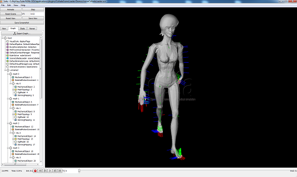
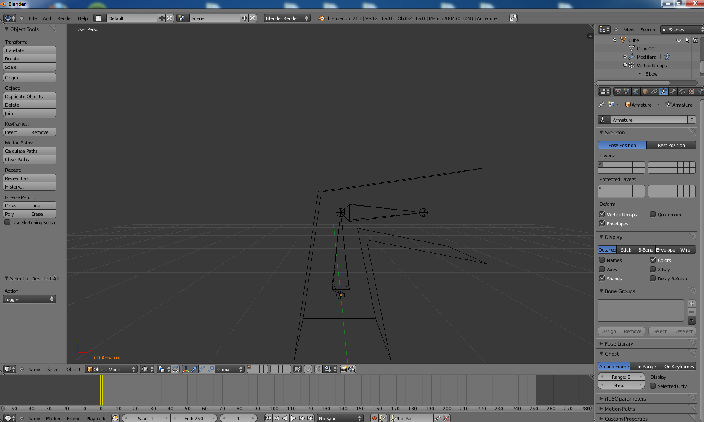
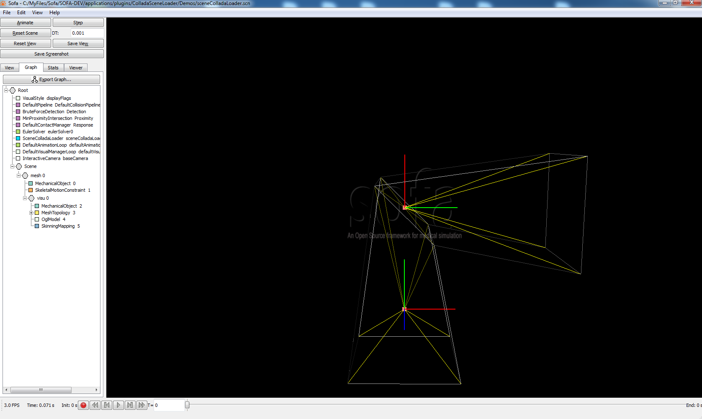
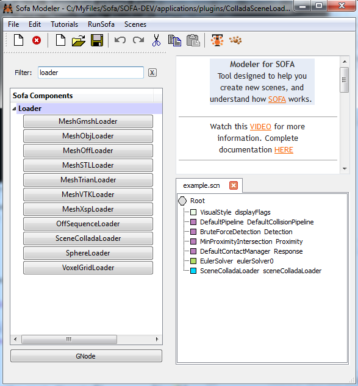

ColladaSceneLoader Plugin Documentation
A skinned and bones animated character walking
|
|  |
Introduction
This page explains how to use the ColladaSceneLoader plugin to load collada scene (.dae) into Sofa.
What is Collada ?
COLLADA defines an XML-based schema to make it easy to transport 3D assets between applications
- enabling diverse 3D authoring and content processing tools to be combined into a production pipeline.
The intermediate language provides comprehensive encoding of visual scenes including: geometry, shaders and effects, physics, animation, kinematics,
and even multiple version representations of the same asset.COLLADA FX enables leading 3D authoring tools to work effectively together to create shader
and effects applications and assets to be authored and packaged using OpenGL Shading Language, Cg, CgFX, and DirectX FX.
How to use
To use this plugin, you just have to go in you sofa configuration file (sofa-local.prf or if you have not this file, use sofa-default.prf in the sofa root directory) and uncomment or add this following line :
DEFINES += SOFA_HAVE_PLUGIN_COLLADA
If you are a Visual Studio user you must generate sofa projects again using the corresponding batch file (Project VC*.bat).
Build the ColladaSceneLoader plugin and load the resulting dynamic library with the Sofa plugin manager available in runSofa or in the sofa Modeler (in the main toolbar : Edit / Plugin Manager...).
You are now able to use the new SceneColladaLoader component. In the Modeler, you can find it in the Loader category. To do so, drag and drop the component into your scene graph and fill up the data "filename" with
the path of the collada scene you want to load. If you launch runSofa with your scene you will see your SceneColladaLoader component and a new generated node below which contains the whole collada scene.
For every skinned mesh, the SceneColladaLoader component creates a MechanicalObject containing the bones used to skin the mesh, a SkeletalMotionContraint containing the whole bones animation
and a SkinningMapping in order to apply the skinning on the mesh.
For every mesh, skinned or not, the loader also creates components needed for visualisation : a MechanicalObject with the mesh vertices, a MeshTopology containing the mesh edges, triangles and
quads, an OglModel component to draw the mesh on the screen and if the mesh is not skinned an IdentityMapping to link the MechanicalObject containing the mesh vertices to the OglModel (this step is
automatically done by the SkinningMapping if we have a skinned mesh).
Examples
The file example.scn (located in the folder : ColladaSceneLoader/Demos/ ) which loads the collada file "example.dae" illustrate pretty well how works the plugin.
Its XML description contains a line with the new SceneColladaLoader component with its filename data filled as below :
<SceneColladaLoader name="sceneColladaLoader" filename="example.dae" />
The collada file example.dae contains a very basic scene with a mesh skinned with two bones representing an arm which is animated in two step as shown in the following screenshots [took from Blender (software)] :
 |
|
 |
| Animation step 1 : Arm is raised |
|
Animation step 2 : Arm is bent |
And now the same scene loaded into Sofa :
 |
 |
 |
| Animation step 1 : Arm is raised |
Animation step 1-2 : Arm animation interpolated by Sofa
(animation speed depends of the animation time step) |
Animation step 2 : Arm is bent |
Another example with a scene containing two meshes, one with the same bones as in the previous example and a sphere without skinning.
|  |
|
 |
| The scene in the Sofa Modeler |
|
The same scene in runSofa |
As you can see in Sofa Modeler, the scene to load a collada file is very simple. We have the SceneColladaLoader to load it and, important thing, we also have an EulerSolver
which will be used by the potential SkeletalMotionProjectiveConstraints to "play" the animation updating positions and velocities.
When you launch runSofa with this scene, a new node will be added which contains the whole collada scene. The name of this node is the name you gave to the
SceneColladaLoader plus the string "_scene". On the right picture, the loader generated two child nodes call "mesh 0" which contains a mesh without skinning (the sphere), and
"mesh 1" which contains a mesh with skinning and bones animation directly from the collada file.
The SkeletalMotionProjectiveConstraint automatically interpolates between animation frames, play with the animation time step to slown down or speed up the animation.
As you can see on the other example below, the woman's hair does not fit her head very well because its coordinates system belongs to a dummy object not supported for the moment.
 |
| A skinned and bones animated mesh representing a woman |
Intellectual property and rights
Author
|
Olivier CARRE |
Contact
|
olivier.carre@inria.fr or sofa-devel@lists.gforge.inria.fr
|
License
|
Your can distribute this plugin under the same license as the core of SOFA, or any other license of your choice.
|
Sponsors
|
Assimp Library
|